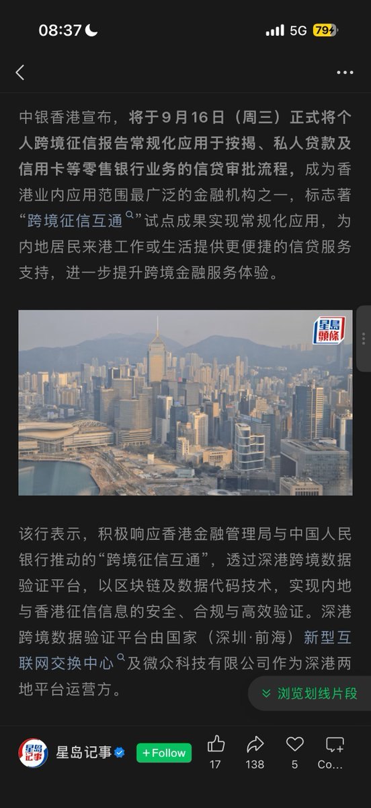

内地居民办理中银香港的信用卡都要查内地征信了？国家的大手开始伸向境外，此举为响应央行跨境征信互通政策，深港跨境数据验证平台由腾讯微众银行提供
据xhs上的信源，非hkid持有者需要存入150w港元，并由RM向分行推荐后，行长签字担保才可获批bochk信用卡。此前icbca就提到查内地征信，不过并未实施
或许刚开始只会在中资行试点，之前申请的工亚信用卡就由以“中国工商银行牡丹卡中心”的名义查询内地征信，网传查询过多可能会“花征信”影响后续信用卡、贷款审批，具体仍以个人情况而定

据xhs上的信源，非hkid持有者需要存入150w港元，并由RM向分行推荐后，行长签字担保才可获批bochk信用卡。此前icbca就提到查内地征信，不过并未实施
或许刚开始只会在中资行试点，之前申请的工亚信用卡就由以“中国工商银行牡丹卡中心”的名义查询内地征信，网传查询过多可能会“花征信”影响后续信用卡、贷款审批，具体仍以个人情况而定

新变化，跨境征信开始落地了？🧐
中银香港宣布将内地征信用于个人信贷审批
刚出炉的新闻——中银香港今天（9月16日）正式宣布，将跨境征信互通应用于个人信贷业务，包括信用卡和贷款审批，成为香港业内应用范围最广的金融机构之一。 https://t.co/QFm5BKVwVQ https://t.co/EMfmRWIzKv
中银香港宣布将内地征信用于个人信贷审批
刚出炉的新闻——中银香港今天（9月16日）正式宣布，将跨境征信互通应用于个人信贷业务，包括信用卡和贷款审批，成为香港业内应用范围最广的金融机构之一。 https://t.co/QFm5BKVwVQ https://t.co/EMfmRWIzKv